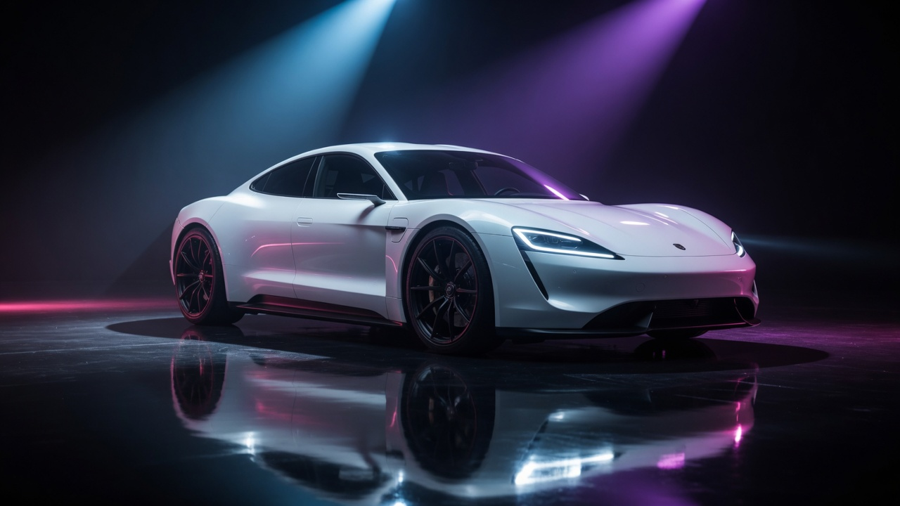
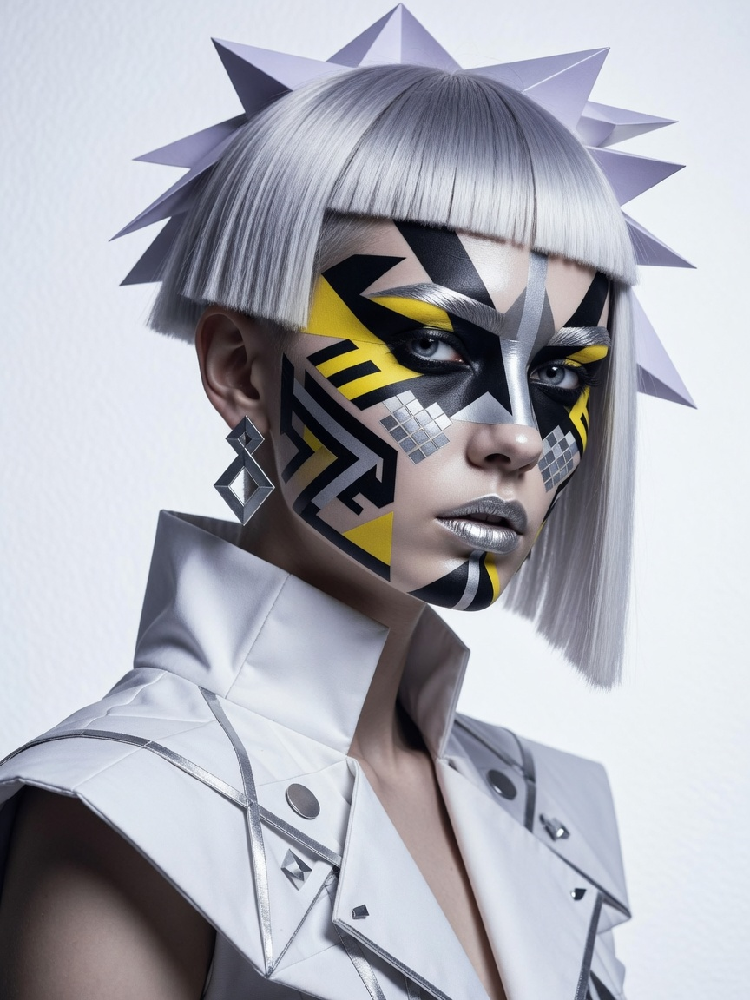

We design forms that move — silhouettes engineered for motion, materials chosen for light, collections that refuse the ordinary.
Beyond trends · Built for tomorrow
Drop 08 · SS26
We design forms that move — silhouettes engineered for motion, materials chosen for light, collections that refuse the ordinary.
Precision lines and quiet hardware. The SS26 edit pairs sculptural outerwear with kinetic accessories.
Explore the edit →
Every surface is intentional. AI drafts the draft — we finish with taste: spacing, type, and the last 10% that sells expensive.
View campaign →
Campaign stills generated for this sample — original assets, not stock from the tutorial video.
Research applied from the Motion Sites / Viktor Oddy workflow covered in the tweet:
100vh sections, Pinterest→AI asset pipeline, layered GSAP reveals (not laggy scrub),
distinctive type (Space Grotesk + Instrument Serif — not default Inter purple-gradient slop),
micro-interactions, and reduced-motion support.
Libs: gsap + ScrollTrigger, lenis (MIT/open).